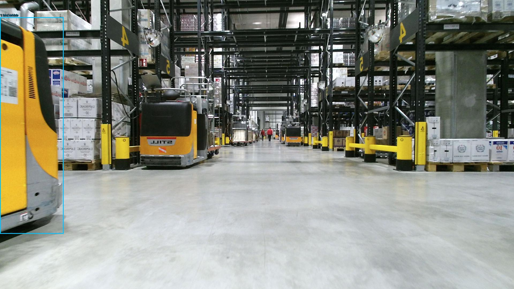
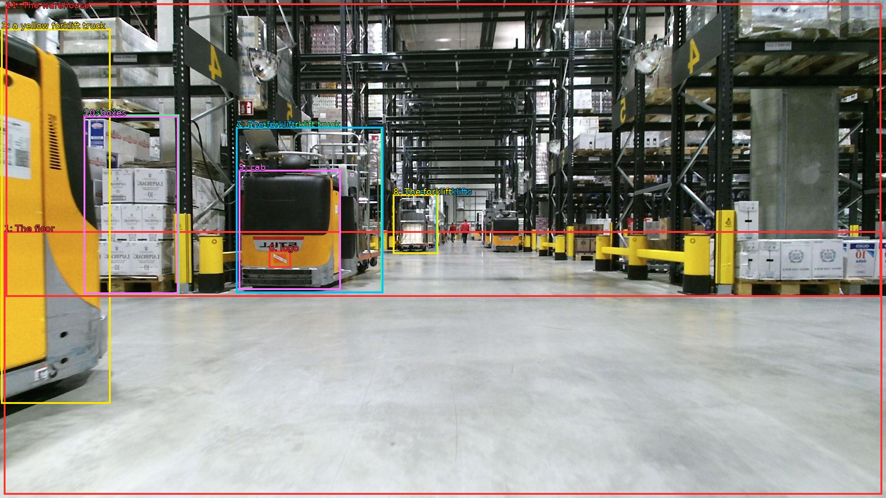

The image shows a large warehouse with a high ceiling and rows of shelves. The floor is made of concrete and there are several forklifts parked in the center of the room. On the left side of the image, there is a yellow forklift truck with a black cab and a red and white logo on the side. The forklift is moving through the warehouse, and on the right side, there are stacks of boxes and pallets. The warehouse appears to be well-stocked with various items for sale. The overall atmosphere of the space is industrial and busy.


Original · Caption raw · Grounding raw · Koordinate
Številke so lokalni ID regije. Dolge slikovne oznake so skrajšane; spodaj so celotne fraze. Napovedane regije se lahko prekrivajo ali opisujejo skupine.
| ID | Celotna fraza | bbox xyxy |
|---|---|---|
| 1 | The floor | [8.639999389648438, 501.6600341796875, 1911.3599853515625, 1072.9801025390625] |
| 2 | several forklifts | [851.5199584960938, 421.7400207519531, 947.5199584960938, 550.260009765625] |
| 3 | a yellow forklift truck | [2.879999876022339, 62.10000228881836, 239.0399932861328, 875.3400268554688] |
| 4 | a yellow forklift truck | [511.67999267578125, 275.94000244140625, 828.47998046875, 635.5800170898438] |
| 5 | cab | [517.4400024414062, 368.82000732421875, 738.239990234375, 628.02001953125] |
| 6 | logo | [582.719970703125, 543.780029296875, 630.719970703125, 580.5] |
| 7 | The forklift | [511.67999267578125, 275.94000244140625, 830.3999633789062, 635.5800170898438] |
| 8 | The forklift | [851.5199584960938, 421.7400207519531, 949.4400024414062, 550.260009765625] |
| 9 | stacks | [181.44000244140625, 248.94000244140625, 388.79998779296875, 638.8200073242188] |
| 10 | boxes | [181.44000244140625, 251.10000610351562, 386.8800048828125, 637.7400512695312] |
| 11 | The warehouse | [12.479999542236328, 7.020000457763672, 1909.43994140625, 643.1400146484375] |